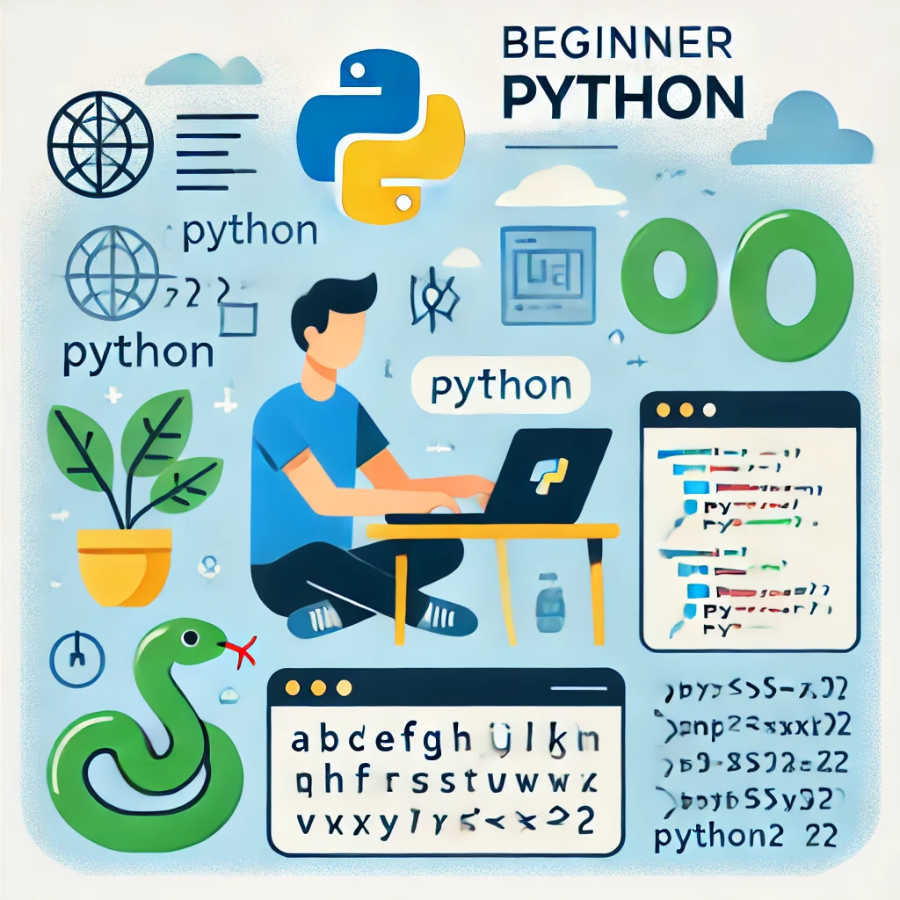

¡Buenos días, Sarah!
Progreso de preparación para prácticas:
25/40 completado
Autoevaluación
Simulador de Entrevistas
Cocinador CV
Talleres de Habilidades
Logros
Consejos Rápidos

Dominando la técnica STAR
Aprende a responder las preguntas más comunes en entrevistas.

Test de personalidad para empleo
Conoce tus fortalezas y debilidades personales.
Creador de CV
Crea un currículum profesional en minutos.

Python para principiantes
Domina habilidades demandadas con nuestros talleres.